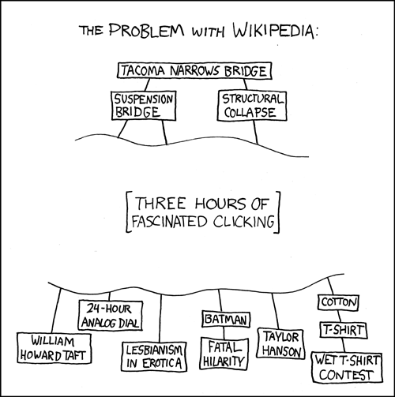

Offline Wiki is downloading a copy of the entirety of the English language wikipedia right now to your computer. Up above should be a progress bar indicating the progress of the download. Be warned that the sum of all human knowledge is not small (At time of writing, it is about 3.7 GB), and may take many hours to complete.
When you are offline, the downloaded state will be frozen to whatever you have already downloaded. The articles are downloaded alphabetically, and include nearly all articles. When you close this tab, the download will stop and resume when you open this app again.
You can still search browse articles while the encyclopedia is downloading, but they are limited to those which have already been downlaoded.
